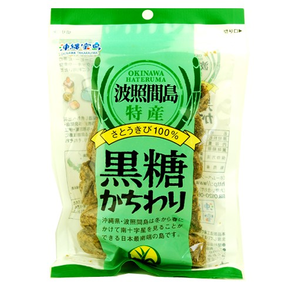
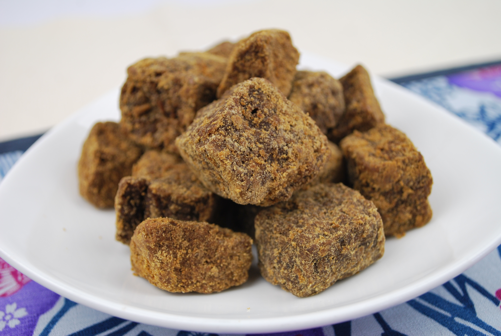
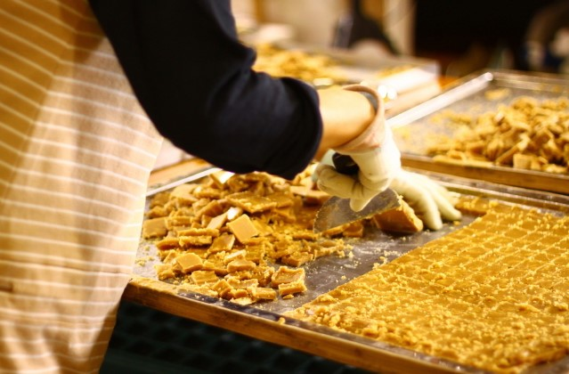

波照間島特産黒糖かちわり
南十字星が見れる波照間島で栽培されたさとうきびを使用し、伝統的製法で作られた黒糖です。
南十字星が見れる波照間島で栽培されたさとうきびの汁をそのまま煮詰めただけの伝統的製法で作られた波照間島産黒糖です。
黒糖の味は、原料であるさとうきびに大きな影響を受け、原料のさとうきびも土壌の性質に大きな影響を受けます。そのため、さとうきび汁100％で製造している黒糖ですが、島により、味や色、香り、食感にもそれぞれの個性が出てきます。
本品の特徴は、やや緑がかった茶色で、噛むたび甘みと苦味の二つの味が口の中で広がるバランスのとれた味です。
沖縄土産としてだけでなく、お茶菓子、粉末状に砕いて手づくりスイーツの原材料としてご使用になられる方も多くいらっしゃいます。
一年に何度も購入されるヘビーリピーターのお客様が多いのも特徴です。
○食べ方
そのままお召し上がりになるか、コーヒーや紅茶に固まりのまま入れて、段々と黒糖の甘みが広がるのを楽しみ、ゆったりとした時間を過ごすことができます。
- 商品概要
- アレルギー
- 栄養成分
| JANコード | 4582112260368 |
|---|---|
| 原材料 | さとうきび（沖縄産） |
| 内容量 | 200g |
| 賞味期間 | 製造から365日 |
| 保存方法 | 直射日光、高温多湿を避け、常温にて保存 |
| 本製品には枠内を塗りつぶしたアレルギー物質が含まれています。 | |||
| 小麦 | 卵 | 乳 | 大豆 |
| 鶏肉 | 豚肉 | ゼラチン | |
| 栄養成分(100mg)あたり | |
| エネルギー | 356kcal |
|---|---|
| たんぱく質 | 1.7g |
| カルシウム | 240mg |
| カリウム | 1100mg |
| ナトリウム | 27mg |
| マグネシウム | 31mg |
| 鉄 | 4.7mg |
| 出典「日本食品標準成分表2015年版（七訂） | |